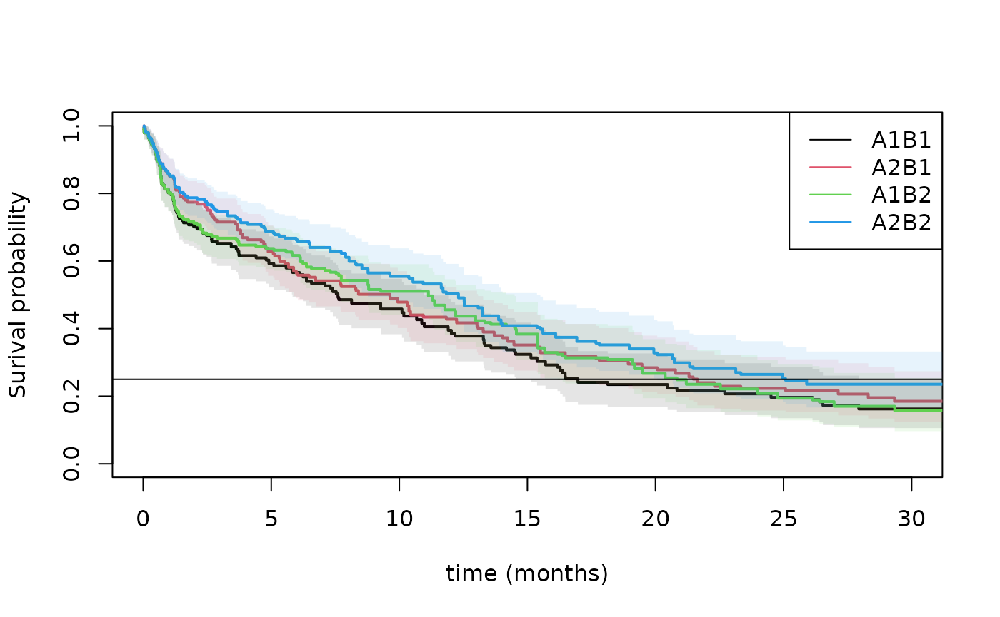

Randomization for Cox Type rate models
Klaus Holst & Thomas Scheike
2026-05-21
Source:vignettes/phreg_rct.Rmd
phreg_rct.RmdTwo-Stage Randomization for counting process outcomes
Rate models are specified for N_1(t), covering:
- survival data
- competing risks, cause-specific hazards
- recurrent events data
Under simple randomization we can estimate the rate Cox model
- \lambda_0(t) \exp(A_0 \beta_0)
Under two-stage randomization we can estimate the rate Cox model
- \lambda_0(t) \exp(A_0 \beta_0 + A_1(t) \beta_1 )
The starting point is that Cox’s partial likelihood score can be used for estimating parameters: \begin{align*} U(\beta) & = \int (A(t) - e(t)) dN_1(t) \end{align*} where A(t) is the combined treatment vector over time.
- The solution will converge to \beta^*, the Struthers-Kalbfleisch solution of the score, with robust Lin-Wei standard errors.
The estimator can be augmented in different ways using additional
covariates at the time of randomization and a censoring augmentation.
The solved estimating equation is \begin{align*}
\sum_i U_i - AUG_0 - AUG_1 + AUG_C = 0
\end{align*} using covariates from augmentR0 to
augment with \begin{align*}
AUG_0 = ( A_0 - \pi_0(X_0) ) X_0 \gamma_0
\end{align*} where P(A_0=1|X_0)=\pi_0(X_0) (which does not
depend on covariates under randomization), and using covariates from
augmentR1 to augment with R indicating whether the second randomization
takes place: \begin{align*}
AUG_1 = R ( A_1 - \pi_1(X_1)) X_1 \gamma_1
\end{align*} and the dynamic censoring augmentation \begin{align*}
AUG_C = \int_0^t \gamma_c(s)^T (e(s) - \bar e(s)) \frac{1}{G_c(s) }
dM_c(s)
\end{align*} where \gamma_c(s)
is chosen to minimise the variance given the dynamic covariates
specified by augmentC.
Propensity score models are always estimated unless a fixed value such as \pi_0=1/2 is requested, though it is generally better to estimate \pi_0 adaptively. Similarly, \gamma_0 and \gamma_1 are estimated to reduce the variance of U_i.
- Treatments must be given as factors.
- The treatment for the 2nd randomization may depend on the response.
- Treatment probabilities are estimated by default and uncertainty from this is adjusted for.
-
treat.modelmust typically allow for interaction between treatment number and covariates.
- Randomization augmentation for the 1st and 2nd randomization is
possible.
typesR=c("R0","R1","R01")
- The censoring model can be stratified on observed baseline
covariates.
- Default model stratifies on randomization
R0. -
cens.modelcan be specified.
- Default model stratifies on randomization
- Censoring augmentation is done dynamically over time with
time-dependent covariates.
-
typesC=c("C","dynC"):Cfor fixed coefficients anddynCfor dynamic. - Applied separately within each stratum of the censoring model.
-
Standard errors are estimated using the influence functions of all estimators, so tests of differences can be computed subsequently.
- Variance adjustment for censoring augmentation is computed by subtracting the variance gain.
- Influence functions are given for the case with
R0only.
The times of randomization are specified by:
-
treat.varis"1"when a randomization occurs.- Default assumes all time points correspond to a treatment (the survival case without time-dependent covariates).
- For recurrent events, this must be specified as the first record for each subject; see example below.
Data must be provided in start-stop-status survival format with:
- one status code indicating events of interest
- one code for censorings
The phreg_rct can be used for counting process style data, and thus covers situations with
- recurrent events
- survival data
- cause-specific hazards (competing risks)
and will in all cases compute augmentations
- dynamic censoring augmentation
- dynC
- RCT augmentation
- R0, R1 and R01
Simple Randomization: Lu-Tsiatis marginal Cox model
library(mets)
set.seed(100)
## Lu, Tsiatis simulation
data <- mets:::simLT(0.7,100)
dfactor(data) <- Z.f~Z
out <- phreg_rct(Surv(time,status)~Z.f,data=data,augmentR0=~X,augmentC=~factor(Z):X)
summary(out)
#> Estimate Std.Err 2.5% 97.5% P-value
#> Marginal-Z.f1 0.29263400 0.2739159 -0.2442313 0.8294993 0.2853693
#> R0_C:Z.f1 0.07166242 0.2234066 -0.3662065 0.5095313 0.7483838
#> R0_dynC:Z.f1 0.08321604 0.2221710 -0.3522312 0.5186633 0.7079889
#> attr(,"class")
#> [1] "summary.phreg_rct"
###out <- phreg_rct(Surv(time,status)~Z.f,data=data,augmentR0=~X,augmentC=~X)
###out <- phreg_rct(Surv(time,status)~Z.f,data=data,augmentR0=~X,augmentC=~factor(Z):X,cens.model=~+1)Results consistent with speff of library(speff2trial)
###library(speff2trial)
library(mets)
data(ACTG175)
###
data <- ACTG175[ACTG175$arms==0 | ACTG175$arms==1, ]
data <- na.omit(data[,c("days","cens","arms","strat","cd40","cd80","age")])
data$days <- data$days+runif(nrow(data))*0.01
dfactor(data) <- arms.f~arms
notrun <- 1
if (notrun==0) {
fit1 <- speffSurv(Surv(days,cens)~cd40+cd80+age,data=data,trt.id="arms",fixed=TRUE)
summary(fit1)
}
#
# Treatment effect
# Log HR SE LowerCI UpperCI p
# Prop Haz -0.70375 0.12352 -0.94584 -0.46165 1.2162e-08
# Speff -0.72430 0.12051 -0.96050 -0.48810 1.8533e-09
out <- phreg_rct(Surv(days,cens)~arms.f,data=data,augmentR0=~cd40+cd80+age,augmentC=~cd40+cd80+age)
summary(out)
#> Estimate Std.Err 2.5% 97.5% P-value
#> Marginal-arms.f1 -0.7036460 0.1224406 -0.9436251 -0.4636669 9.092786e-09
#> R0_C:arms.f1 -0.7265342 0.1197607 -0.9612610 -0.4918075 1.306891e-09
#> R0_dynC:arms.f1 -0.7204699 0.1196158 -0.9549125 -0.4860272 1.710025e-09
#> attr(,"class")
#> [1] "summary.phreg_rct"The study is actually block-randomized, so the standard errors should be computed with an adjustment equivalent to augmenting with the block as a factor:
dtable(data,~strat+arms)
#>
#> arms 0 1
#> strat
#> 1 223 213
#> 2 96 106
#> 3 213 203
dfactor(data) <- strat.f~strat
out <- phreg_rct(Surv(days,cens)~arms.f,data=data,augmentR0=~strat.f)
summary(out)
#> Estimate Std.Err 2.5% 97.5% P-value
#> Marginal-arms.f1 -0.7036460 0.1224406 -0.9436251 -0.4636669 9.092786e-09
#> R0_none:arms.f1 -0.7009844 0.1217138 -0.9395390 -0.4624298 8.447051e-09
#> attr(,"class")
#> [1] "summary.phreg_rct"Two-Stage Randomization CALGB-9823 for survival outcomes
We illustrate an analysis of one SMART (Sequential Multiple Assignment Randomised Trial) conducted by Cancer and Leukemia Group B Protocol 8923 (CALGB 8923), Stone and others (2001). 388 patients were randomised to an initial treatment of GM-CSF (A_1) or standard chemotherapy (A_2). Patients with complete remission and informed consent were then re-randomised to cytarabine only (B_1) or cytarabine plus mitoxantrone (B_2).
We first compute the weighted risk-set estimator based on estimated weights \begin{align*} \Lambda_{A1,B1}(t) & = \sum_i \int_0^t \frac{w_i(s)}{Y^w(s)} dN_i(s) \end{align*} where w_i(s) = I(A0_i=A1) + (t>T_R) I(A1_i=B1)/\pi_1(X_i), that is 1 when you start on treatment A1 and then for those that changes to B1 at time T_R then is scaled up with the proportion doing this. This is equivalent to the IPTW (inverse probability of treatment weighted estimator). We estimate the treatment regimes A1, B1 and A2, B1 by letting A10 indicate those that are consistent with ending on B1. A10 then starts being 1 and becomes 0 if the subject is treated with B2, but stays 1 if the subject is treated with B1. We can then look at the two strata where A0=0,A10=1 and A0=1,A10=1. Similarly, for those that end being consistent with B2. Thus defining A11 to start being 1, then stays 1 if B2 is taken, and becomes 0 if the second randomization is B1.
- the treatment models are for all time-points, unless the
weight.varvariable is given (1 for treatments, 0 otherwise) to accommodate a general start-stop format - the treatment model may also depend on a response value
- standard errors are based on influence functions and is also computed for the baseline
We here use the propensity score model P(A1=B1|A0) that uses the observed frequencies on arm B1 among those starting out on either A1 or A2.
data(calgb8923)
calgt <- calgb8923
## tm <- At.f~factor(Count2)+age+sex+wbc
## tm <- At.f~factor(Count2)
tm <- At.f~factor(Count2)*A0.f
head(calgt)
#> id V X Z TR R U delta stop age wbc sex race time status start
#> 1 1 0 0 0 0.00 0 13.33 1 13.33 64 128.0 1 1 13.338219 1 0.00
#> 2 2 1 1 0 0.00 0 17.80 1 17.80 71 4.3 2 1 17.802995 1 0.00
#> 3 3 1 0 0 0.00 0 1.27 1 1.27 71 43.6 2 1 1.271527 1 0.00
#> 4 4 1 0 1 0.00 0 24.77 1 24.77 63 72.3 2 1 0.730000 2 0.00
#> 5 4 1 0 1 0.73 1 24.77 1 24.77 63 72.3 2 1 24.772515 1 0.73
#> 6 5 0 1 0 0.00 0 10.37 1 10.37 65 1.4 1 1 10.374479 1 0.00
#> A0.f A0 A1 A11 A12 A1.f A10 At.f lbnr__id Count1 Count2 consent trt2 trt1
#> 1 0 0 0 1 0 0 0 0 1 0 0 -1 -1 1
#> 2 1 1 0 1 0 0 0 1 1 0 0 -1 -1 2
#> 3 0 0 0 1 0 0 0 0 1 0 0 -1 -1 1
#> 4 0 0 0 1 0 0 0 0 1 0 0 -1 -1 1
#> 5 0 0 1 1 1 1 1 1 2 0 1 1 1 1
#> 6 1 1 0 1 0 0 0 1 1 0 0 -1 -1 2
ll0 <- phreg_IPTW(Event(start,time,status==1)~strata(A0,A10)+cluster(id),calgt,treat.model=tm)
pll0 <- predict(ll0,expand.grid(A0=0:1,A10=0,id=1))
ll1 <- phreg_IPTW(Event(start,time,status==1)~strata(A0,A11)+cluster(id),calgt,treat.model=tm)
pll1 <- predict(ll1,expand.grid(A0=0:1,A11=1,id=1))
plot(pll0,se=1,lwd=2,col=1:2,lty=1,xlab="time (months)",xlim=c(0,30))
plot(pll1,add=TRUE,col=3:4,se=1,lwd=2,lty=1,xlim=c(0,30))
abline(h=0.25)
legend("topright",c("A1B1","A2B1","A1B2","A2B2"),col=c(1,2,3,4),lty=1)
summary(pll1,times=1:10)
#> Predictions of type 'surv'
#> Showing subjects: 1, 2
#> Showing times: 1, 2, 3, 4, 5, 6, 7, 8, 9, 10
#>
#> -- Subject 1 --
#> time surv se lower upper
#> 1 0.8023 0.0286 0.7481 0.8603
#> 2 0.7120 0.0310 0.6537 0.7754
#> 3 0.6676 0.0328 0.6062 0.7352
#> 4 0.6472 0.0327 0.5863 0.7145
#> 5 0.6370 0.0326 0.5763 0.7041
#> 6 0.6164 0.0323 0.5562 0.6831
#> 7 0.5770 0.0339 0.5143 0.6474
#> 8 0.5428 0.0349 0.4786 0.6156
#> 9 0.5155 0.0379 0.4463 0.5953
#> 10 0.5103 0.0381 0.4409 0.5906
#>
#> -- Subject 2 --
#> time surv se lower upper
#> 1 0.8568 0.0249 0.8094 0.9071
#> 2 0.7871 0.0282 0.7338 0.8444
#> 3 0.7456 0.0292 0.6906 0.8051
#> 4 0.7134 0.0313 0.6545 0.7775
#> 5 0.6879 0.0318 0.6284 0.7530
#> 6 0.6624 0.0321 0.6024 0.7283
#> 7 0.6401 0.0335 0.5778 0.7091
#> 8 0.6109 0.0360 0.5443 0.6858
#> 9 0.5646 0.0395 0.4923 0.6475
#> 10 0.5544 0.0396 0.4819 0.6377
summary(pll0,times=1:10)
#> Predictions of type 'surv'
#> Showing subjects: 1, 2
#> Showing times: 1, 2, 3, 4, 5, 6, 7, 8, 9, 10
#>
#> -- Subject 1 --
#> time surv se lower upper
#> 1 0.8017 0.0287 0.7473 0.8601
#> 2 0.7008 0.0336 0.6379 0.7700
#> 3 0.6523 0.0359 0.5855 0.7267
#> 4 0.6158 0.0375 0.5466 0.6938
#> 5 0.5924 0.0385 0.5215 0.6728
#> 6 0.5660 0.0391 0.4944 0.6479
#> 7 0.5330 0.0395 0.4609 0.6164
#> 8 0.4856 0.0408 0.4119 0.5725
#> 9 0.4751 0.0411 0.4010 0.5629
#> 10 0.4580 0.0416 0.3834 0.5472
#>
#> -- Subject 2 --
#> time surv se lower upper
#> 1 0.8561 0.0251 0.8083 0.9067
#> 2 0.7741 0.0305 0.7165 0.8363
#> 3 0.7154 0.0338 0.6520 0.7848
#> 4 0.6690 0.0366 0.6009 0.7448
#> 5 0.6272 0.0383 0.5564 0.7070
#> 6 0.5642 0.0408 0.4896 0.6502
#> 7 0.5413 0.0415 0.4658 0.6289
#> 8 0.5244 0.0420 0.4482 0.6136
#> 9 0.5014 0.0424 0.4249 0.5918
#> 10 0.4784 0.0427 0.4017 0.5699The propensity score model can be extended to use covariates to get increased efficiency. Note also that the propensity scores for A0 will cancel out in the different strata.
We now illustrate how to fit a Cox model of the form \begin{align*} & \lambda_{A0}(t) \exp( B1(t) \beta_1 + B2(t) \beta_2) \end{align*} where \beta_0 is the effect of treatment A2 and the effect of B1
Now comparing only those starting on A1/A2 to compare the effect of B1 versus B2
library(mets)
data(calgb8923)
calgt <- calgb8923
calgt$treatvar <- 1
## making time-dependent indicators of going to B1/B2
calgt$A10t <- calgt$A11t <- 0
calgt <- dtransform(calgt,A10t=1,A1==0 & Count2==1)
calgt <- dtransform(calgt,A11t=1,A1==1 & Count2==1)
calgt0 <- subset(calgt,A0==0)
ss0 <- phreg_rct(Event(start,time,status)~A10t+A11t+cluster(id),data=subset(calgt,A0==0),
typesR=c("non","R1"),typesC=c("non","dynC"),
treat.var="treatvar",treat.model=At.f~factor(Count2),
augmentR1=~age+wbc+sex+TR,augmentC=~age+wbc+sex+TR+Count2)
summary(ss0)
#> Estimate Std.Err 2.5% 97.5% P-value
#> Marginal-A10t -1.570250 0.2433389 -2.047185 -1.0933143 1.097054e-10
#> Marginal-A11t -1.407287 0.2193924 -1.837289 -0.9772861 1.413090e-10
#> non_dynC:A10t -1.583146 0.2418997 -2.057260 -1.1090311 5.963963e-11
#> non_dynC:A11t -1.406682 0.2190539 -1.836020 -0.9773442 1.348264e-10
#> R1_non:A10t -1.544312 0.2396152 -2.013949 -1.0746751 1.156250e-10
#> R1_non:A11t -1.423064 0.2087465 -1.832199 -1.0139282 9.284039e-12
#> R1_dynC:A10t -1.557021 0.2381534 -2.023793 -1.0902486 6.239330e-11
#> R1_dynC:A11t -1.422360 0.2083906 -1.830798 -1.0139218 8.764919e-12
#> attr(,"class")
#> [1] "summary.phreg_rct"
ss1 <- phreg_rct(Event(start,time,status)~A10t+A11t+cluster(id),data=subset(calgt,A0==1),
typesR=c("non","R1"),typesC=c("non","dynC"),
treat.var="treatvar",treat.model=At.f~factor(Count2),
augmentR1=~age+wbc+sex+TR,augmentC=~age+wbc+sex+TR+Count2)
summary(ss1)
#> Estimate Std.Err 2.5% 97.5% P-value
#> Marginal-A10t -0.8968608 0.2312067 -1.350018 -0.4437039 1.048683e-04
#> Marginal-A11t -0.9754528 0.2215523 -1.409687 -0.5412181 1.068580e-05
#> non_dynC:A10t -0.8312901 0.2263294 -1.274888 -0.3876925 2.397942e-04
#> non_dynC:A11t -1.0165973 0.2211108 -1.449967 -0.5832280 4.272177e-06
#> R1_non:A10t -0.9310307 0.2299136 -1.381653 -0.4804083 5.133147e-05
#> R1_non:A11t -0.9361199 0.2204289 -1.368153 -0.5040872 2.168342e-05
#> R1_dynC:A10t -0.8634407 0.2250083 -1.304449 -0.4224326 1.243576e-04
#> R1_dynC:A11t -0.9753885 0.2199851 -1.406551 -0.5442256 9.255029e-06
#> attr(,"class")
#> [1] "summary.phreg_rct"and a more structured model with both A0 and A1, that does not seem very reasonable based on the above,
Recurrent events: Simple Randomization
Recurrent events simulation with death and censoring.
n <- 1000
beta <- 0.15;
data(CPH_HPN_CRBSI)
dr <- CPH_HPN_CRBSI$terminal
base1 <- CPH_HPN_CRBSI$crbsi
base4 <- scalecumhaz(CPH_HPN_CRBSI$mechanical,0.5)
cens <- rbind(c(0,0),c(2000,0.5),c(5110,3))
ce <- 3; betao1 <- 0
varz <- 1; dep=4; X <- z <- rgamma(n,1/varz)*varz
Z0 <- NULL
px <- 0.5
if (betao1!=0) px <- lava::expit(betao1*X)
A0 <- rbinom(n,1,px)
r1 <- exp(A0*beta[1])
rd <- exp( A0 * 0.15)
rc <- exp( A0 * 0 )
###
rr <- mets:::simLUCox(n,base1,death.cumhaz=dr,r1=r1,Z0=X,dependence=dep,var.z=varz,cens=ce/5000)
rr$A0 <- A0[rr$id]
rr$z1 <- attr(rr,"z")[rr$id]
rr$lz1 <- log(rr$z1)
rr$X <- rr$lz1
rr$lX <- rr$z1
rr$statusD <- rr$status
rr <- dtransform(rr,statusD=2,death==1)
rr <- count_history(rr)
rr$Z <- rr$A0
data <- rr
data$Z.f <- as.factor(data$Z)
data$treattime <- 0
data <- dtransform(data,treattime=1,lbnr__id==1)
dlist(data,start+stop+statusD+A0+z1+treattime+Count1~id|id %in% c(4,5))
#> id: 4
#> start stop statusD A0 z1 treattime Count1
#> 4 0.000 9.565 1 0 0.471 1 0
#> 1003 9.565 372.057 1 0 0.471 0 1
#> 1468 372.057 389.831 0 0 0.471 0 2
#> ------------------------------------------------------------
#> id: 5
#> start stop statusD A0 z1 treattime Count1
#> 5 0 213.9 2 1 2.338 1 0Now we fit the model
fit2 <- phreg_rct(Event(start,stop,statusD)~Z.f+cluster(id),data=data,
treat.var="treattime",typesR=c("non","R0"),typesC=c("non","C","dynC"),
augmentR0=~z1,augmentC=~z1+Count1)
summary(fit2)
#> Estimate Std.Err 2.5% 97.5% P-value
#> Marginal-Z.f1 0.2870649 0.09632565 0.09827011 0.4758597 0.0028810700
#> non_C:Z.f1 0.2826049 0.09631924 0.09382262 0.4713871 0.0033457707
#> non_dynC:Z.f1 0.1926888 0.08864883 0.01894025 0.3664373 0.0297337758
#> R0_non:Z.f1 0.3110880 0.08049844 0.15331399 0.4688621 0.0001113067
#> R0_C:Z.f1 0.3066141 0.08049078 0.14885504 0.4643731 0.0001393570
#> R0_dynC:Z.f1 0.2164684 0.07113356 0.07704922 0.3558877 0.0023413376
#> attr(,"class")
#> [1] "summary.phreg_rct"- Censoring model was stratified on Z.f
- treatment probabilities were estimated using the data
Twostage Randomization: Recurrent events
n <- 500
beta=c(0.3,0.3);betatr=0.3;betac=0;betao=0;betao1=0;ce=3;fixed=1;sim=1;dep=4;varz=1;ztr=0; ce <- 3
## take possible frailty
Z0 <- rgamma(n,1/varz)*varz
px0 <- 0.5; if (betao!=0) px0 <- expit(betao*Z0)
A0 <- rbinom(n,1,px0)
r1 <- exp(A0*beta[1])
#
px1 <- 0.5; if (betao1!=0) px1 <- expit(betao1*Z0)
A1 <- rbinom(n,1,px1)
r2 <- exp(A1*beta[2])
rtr <- exp(A0*betatr[1])
rr <- mets:::simLUCox(n,base1,death.cumhaz=dr,cumhaz2=base1,rtr=rtr,betatr=0.3,A0=A0,Z0=Z0,
r1=r1,r2=r2,dependence=dep,var.z=varz,cens=ce/5000,ztr=ztr)
rr$z1 <- attr(rr,"z")[rr$id]
rr$A1 <- A1[rr$id]
rr$A0 <- A0[rr$id]
rr$lz1 <- log(rr$z1)
rr <- count_history(rr,types=1:2)
rr$A1t <- 0
rr <- dtransform(rr,A1t=A1,Count2==1)
rr$At.f <- rr$A0
rr$A0.f <- factor(rr$A0)
rr$A1.f <- factor(rr$A1)
rr <- dtransform(rr, At.f = A1, Count2 == 1)
rr$At.f <- factor(rr$At.f)
dfactor(rr) <- A0.f~A0
rr$treattime <- 0
rr <- dtransform(rr,treattime=1,lbnr__id==1)
rr$lagCount2 <- dlag(rr$Count2)
rr <- dtransform(rr,treattime=1,Count2==1 & (Count2!=lagCount2))
dlist(rr,start+stop+statusD+A0+A1+A1t+At.f+Count2+z1+treattime+Count1~id|id %in% c(5,10))
#> id: 5
#> start stop statusD A0 A1 A1t At.f Count2 z1 treattime Count1
#> 5 0 132.3 3 1 1 0 1 0 0.2316 1 0
#> ------------------------------------------------------------
#> id: 10
#> start stop statusD A0 A1 A1t At.f Count2 z1 treattime Count1
#> 10 0.00 33.12 2 1 0 0 1 0 0.06891 1 0
#> 509 33.12 1363.53 0 1 0 0 0 1 0.06891 1 0Now fitting the model and computing different augmentations (true values 0.3 and 0.3)
sse <- phreg_rct(Event(start,time,statusD)~A0.f+A1t+cluster(id),data=rr,
typesR=c("non","R0","R1","R01"),typesC=c("non","C","dynC"),treat.var="treattime",
treat.model=At.f~factor(Count2),
augmentR0=~z1,augmentR1=~z1,augmentC=~z1+Count1+A1t)
summary(sse)
#> Estimate Std.Err 2.5% 97.5% P-value
#> Marginal-A0.f1 0.3179631 0.1418023 0.04003574 0.5958904 0.0249420566
#> Marginal-A1t 0.3290147 0.1472363 0.04043683 0.6175925 0.0254434247
#> non_C:A0.f1 0.3002782 0.1391490 0.02755115 0.5730053 0.0309308283
#> non_C:A1t 0.4151190 0.1405664 0.13961382 0.6906241 0.0031451130
#> non_dynC:A0.f1 0.3104992 0.1314476 0.05286660 0.5681318 0.0181692114
#> non_dynC:A1t 0.4374223 0.1300991 0.18243265 0.6924119 0.0007731772
#> R0_non:A0.f1 0.4142867 0.1176773 0.18364338 0.6449300 0.0004306830
#> R0_non:A1t 0.3382185 0.1470378 0.05002979 0.6264072 0.0214360247
#> R0_C:A0.f1 0.3962505 0.1144662 0.17190089 0.6206002 0.0005367253
#> R0_C:A1t 0.4242165 0.1403584 0.14911904 0.6993140 0.0025079567
#> R0_dynC:A0.f1 0.4066624 0.1049692 0.20092652 0.6123983 0.0001070147
#> R0_dynC:A1t 0.4464941 0.1298744 0.19194497 0.7010432 0.0005862621
#> R1_non:A0.f1 0.3269008 0.1416813 0.04921043 0.6045911 0.0210383383
#> R1_non:A1t 0.2104421 0.1254571 -0.03544923 0.4563335 0.0934636201
#> R1_C:A0.f1 0.3092275 0.1390258 0.03674199 0.5817130 0.0261319083
#> R1_C:A1t 0.2976811 0.1175580 0.06727171 0.5280905 0.0113347106
#> R1_dynC:A0.f1 0.3194771 0.1313171 0.06210024 0.5768540 0.0149798139
#> R1_dynC:A1t 0.3202318 0.1048176 0.11479297 0.5256706 0.0022496121
#> R01_non:A0.f1 0.4092668 0.1176428 0.17869115 0.6398424 0.0005034879
#> R01_non:A1t 0.2280764 0.1243165 -0.01557936 0.4717322 0.0665584775
#> R01_C:A0.f1 0.3912859 0.1144307 0.16700576 0.6155659 0.0006275647
#> R01_C:A1t 0.3150865 0.1163399 0.08706445 0.5431086 0.0067623432
#> R01_dynC:A0.f1 0.4016977 0.1049305 0.19603760 0.6073577 0.0001290708
#> R01_dynC:A1t 0.3375831 0.1034497 0.13482542 0.5403408 0.0011013908
#> attr(,"class")
#> [1] "summary.phreg_rct"-
treat.modelcodes A_0 and A_1 asAt.f; here we allow a model that depends on the randomization to be as adaptive as possible. - For the observational case one can also adjust for covariates here.
- The censoring model was stratified on
A0.f.
Causal assumptions for Two-Stage Randomization: Recurrent events
We are interested in N_1 and also have death N_d.
Given X_0, we require:
- A_0 \perp N_1^0(), N_1^1(), N_d^0(), N_d^1() | X_0
- positivity: 1 > \pi_0(X_0) > 0
Given \bar X_1, the history accumulated up to the time T_R of the second randomization:
- A_1 \perp N_1^0(), N_1^1(), N_d^0(), N_d^1() | \bar X_1
- positivity: 1 > \pi_1(X_1) > 0
And consistency, to link counterfactual quantities to observed data.
We must use an IPTW-weighted Cox score and augment as before.
In addition we require that censoring is independent given, for example, A_0:
- Independent censoring.
To use phreg_rct in this setting:
- Set
RCT=FALSE. - Propensity score models must be specified.
- The marginal estimate is based on the IPTW Cox model
phreg_IPTW.- When the same model is used for both the propensity scores and the augmentation models, the augmentation models are not needed due to the adaptive nature of fitting the propensity score models.
fit2 <- phreg_rct(Event(start,stop,statusD)~Z.f+cluster(id),data=data,
typesR=c("non","R0"),typesC=c("non","C","dynC"),
RCT=FALSE,treat.model=Z.f~z1,augmentR0=~z1,augmentC=~z1+Count1,
treat.var="treattime")
summary(fit2)
#> Estimate Std.Err 2.5% 97.5% P-value
#> Marginal-Z.f1 0.3111195 0.08058494 0.15317593 0.4690631 0.0001130326
#> non_C:Z.f1 0.3067348 0.08057748 0.14880581 0.4646637 0.0001408301
#> non_dynC:Z.f1 0.2169383 0.07119837 0.07739205 0.3564845 0.0023117164
#> R0_non:Z.f1 0.3111195 0.08058494 0.15317593 0.4690631 0.0001130326
#> R0_C:Z.f1 0.3067348 0.08057748 0.14880581 0.4646637 0.0001408301
#> R0_dynC:Z.f1 0.2169383 0.07119837 0.07739205 0.3564845 0.0023117164
#> attr(,"class")
#> [1] "summary.phreg_rct"and for twostage randomization
sse <- phreg_rct(Event(start,time,statusD)~A0.f+A1t+cluster(id),data=rr,
typesR=c("non","R0","R1","R01"),typesC=c("non","C","dynC"),
treat.var="treattime",
RCT=FALSE,treat.model=At.f~z1*factor(Count2),
augmentR0=~z1,augmentR1=~z1,augmentC=~z1+Count1+A1t)
summary(sse)
#> Estimate Std.Err 2.5% 97.5% P-value
#> Marginal-A0.f1 0.3817476 0.13188068 0.12326622 0.6402290 0.0037958891
#> Marginal-A1t 0.2259319 0.12344157 -0.01600910 0.4678730 0.0672089296
#> non_C:A0.f1 0.3765255 0.12594711 0.12967369 0.6233773 0.0027938653
#> non_C:A1t 0.3187675 0.11256529 0.09814361 0.5393914 0.0046280182
#> non_dynC:A0.f1 0.3797091 0.11214290 0.15991306 0.5995051 0.0007093493
#> non_dynC:A1t 0.3514300 0.09297578 0.16920079 0.5336591 0.0001569535
#> R0_non:A0.f1 0.3817476 0.13188068 0.12326622 0.6402290 0.0037958891
#> R0_non:A1t 0.2259319 0.12344157 -0.01600910 0.4678730 0.0672089296
#> R0_C:A0.f1 0.3765255 0.12594711 0.12967369 0.6233773 0.0027938653
#> R0_C:A1t 0.3187675 0.11256529 0.09814361 0.5393914 0.0046280182
#> R0_dynC:A0.f1 0.3797091 0.11214290 0.15991306 0.5995051 0.0007093493
#> R0_dynC:A1t 0.3514300 0.09297578 0.16920079 0.5336591 0.0001569535
#> R1_non:A0.f1 0.3817476 0.13188068 0.12326622 0.6402290 0.0037958891
#> R1_non:A1t 0.2259319 0.12344157 -0.01600910 0.4678730 0.0672089296
#> R1_C:A0.f1 0.3765255 0.12594711 0.12967369 0.6233773 0.0027938653
#> R1_C:A1t 0.3187675 0.11256529 0.09814361 0.5393914 0.0046280182
#> R1_dynC:A0.f1 0.3797091 0.11214290 0.15991306 0.5995051 0.0007093493
#> R1_dynC:A1t 0.3514300 0.09297578 0.16920080 0.5336591 0.0001569535
#> R01_non:A0.f1 0.3817476 0.13185641 0.12331378 0.6401814 0.0037894525
#> R01_non:A1t 0.2259319 0.12307282 -0.01528637 0.4671502 0.0663934395
#> R01_C:A0.f1 0.3765255 0.12592170 0.12972349 0.6233275 0.0027883528
#> R01_C:A1t 0.3187675 0.11216079 0.09893641 0.5385986 0.0044823275
#> R01_dynC:A0.f1 0.3797091 0.11211436 0.15996900 0.5994492 0.0007071245
#> R01_dynC:A1t 0.3514300 0.09248564 0.17016144 0.5326985 0.0001447938
#> attr(,"class")
#> [1] "summary.phreg_rct"SessionInfo
sessionInfo()
#> R version 4.6.0 (2026-04-24)
#> Platform: x86_64-pc-linux-gnu
#> Running under: Ubuntu 24.04.4 LTS
#>
#> Matrix products: default
#> BLAS: /usr/lib/x86_64-linux-gnu/openblas-pthread/libblas.so.3
#> LAPACK: /usr/lib/x86_64-linux-gnu/openblas-pthread/libopenblasp-r0.3.26.so; LAPACK version 3.12.0
#>
#> locale:
#> [1] LC_CTYPE=C.UTF-8 LC_NUMERIC=C LC_TIME=C.UTF-8
#> [4] LC_COLLATE=C.UTF-8 LC_MONETARY=C.UTF-8 LC_MESSAGES=C.UTF-8
#> [7] LC_PAPER=C.UTF-8 LC_NAME=C LC_ADDRESS=C
#> [10] LC_TELEPHONE=C LC_MEASUREMENT=C.UTF-8 LC_IDENTIFICATION=C
#>
#> time zone: UTC
#> tzcode source: system (glibc)
#>
#> attached base packages:
#> [1] stats graphics grDevices utils datasets methods base
#>
#> other attached packages:
#> [1] mets_1.3.10
#>
#> loaded via a namespace (and not attached):
#> [1] cli_3.6.6 knitr_1.51 rlang_1.2.0
#> [4] xfun_0.57 textshaping_1.0.5 jsonlite_2.0.0
#> [7] listenv_0.10.1 future.apply_1.20.2 lava_1.9.1
#> [10] htmltools_0.5.9 ragg_1.5.2 sass_0.4.10
#> [13] rmarkdown_2.31 grid_4.6.0 evaluate_1.0.5
#> [16] jquerylib_0.1.4 fastmap_1.2.0 numDeriv_2016.8-1.1
#> [19] yaml_2.3.12 mvtnorm_1.3-7 lifecycle_1.0.5
#> [22] timereg_2.0.7 compiler_4.6.0 codetools_0.2-20
#> [25] fs_2.1.0 htmlwidgets_1.6.4 Rcpp_1.1.1-1.1
#> [28] future_1.70.0 lattice_0.22-9 systemfonts_1.3.2
#> [31] digest_0.6.39 R6_2.6.1 parallelly_1.47.0
#> [34] parallel_4.6.0 splines_4.6.0 Matrix_1.7-5
#> [37] bslib_0.11.0 tools_4.6.0 RcppArmadillo_15.2.6-1
#> [40] globals_0.19.1 survival_3.8-6 pkgdown_2.2.0
#> [43] cachem_1.1.0 desc_1.4.3